Introduction
Superheroes are interesting regardless of an individual’s age, and stories of such demihumans have been told for centuries in every civilization from the Greeks, to Romans, to modern America. What do we really know about these heroes? Let’s take a look at TalentLab’s amazing superhero visualization that takes data from popular American comics and allows users to interact with it in meaningful ways.
What is the data?
The application Talentlab is actually a “software-as-a-service based people analytics software” developed by Data Laboratories Limited (see here). The application itself is an interactive business analytics tool that takes “people information from multiple sources” and converts it into visualizations. The data here has 100 superheroes from Marvel, DC Comics, and Ian Fleming. Basic information about these superheroes is available (like gender, super name, real name, power, intelligence, creator, etc.) which can be seen in full on the “table” tab.
How was it collected?
The selection criteria used in the application and where the data was collected is never really explained in the application itself. However upon further research I stumbled upon the superhero database where the a lot of the categories that are used in the application can be found here as well. I suspect this is what they used, but no proper documentation was found to support this. 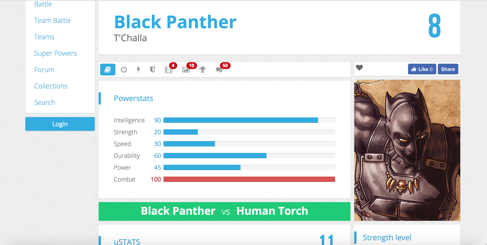
Critique
There are a few things about this visualization that make it a powerful tool for one’s quest to assemble a team of heroes to combat the forces of evil! The data here has 100 superheroes from Marvel, DC Comics, and even Ian Fleming. However the selection criteria or where the data was collected is never really explained. Interestingly enough the descriptions for the superheroes matches roughly with the wikipedia entry. The small population size of a 100 heroes limits this tool on the larger world of superheroes globally. However the stunning UI, expansive data manipulation tools, and interactive visualization more than make up for this. The main types of visualizations that are available are shown on the top left with only the graphics for the tab itself. 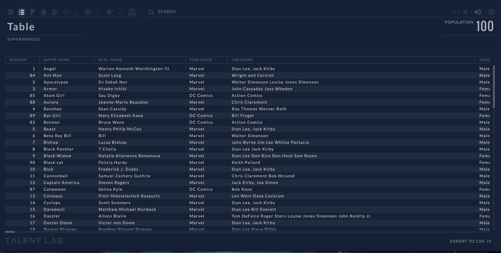
Entire dataset is shown as a table when tool loads up. User can scroll left to view more columns. Even here you are able to “x” out the columns you don’t want to see.
The UI is a simple and intuitive thus not overwhelming the user. Color scheme has neutral colors for the background and appropriate colors have been used for the data points on the graphs as well (categorical for almost all choices). However, even in its simplicity it has a lot of powerful functional tools available to manipulate this data. The tooltips are best described on the information page (see below). 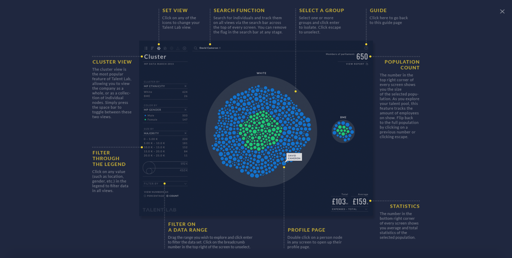
Information page
On the top right you will see the population count of the set you are working with, on the top left you see the type of visualization used, on the left you will see the different manipulation you can do on your population, and to the right you have your interactive visualization. By hovering over particular section of the visualization you are able to bring up information on the particular section (or hero) you are looking at.
With these tools set in place we can ask interesting questions like:
• “Who are the good/bad guys?”
• “Are most good/bad guys human?”
• “What does the distribution of good/bad heroes look in terms of their gender?”
• “What are common words used in the backstory of batman?”
• “How equally distributed is power based on gender?”
• “Are there more good or bad guys?”
• “Does having more intelligence necessarily mean weaker hero?”
• “What heroes are both highly intelligent and powerful?”
• “Is there a particular creator who makes a lot of superheroes? Does he/she lean towards a particular type of hero?”
The expansive ways you can manipulate the dataset and the different visualization allow us to answer these questions. More on this below.

In this image we see cluster view (settings: cluster by = character type, view as = nodes, color by = good or bad, and size by = appearances, and view number as = count). Here by hovering over this particular good human we see Black Panther’s relevant information as text.
In any visualization by double clicking the particular hero you can bring up expanded information on that hero in a very user friendly way. Wow, Black Panther’s history as a Wakanda’s king could be helpful for our highly advanced technological firm that is aiming for the good of all mankind! 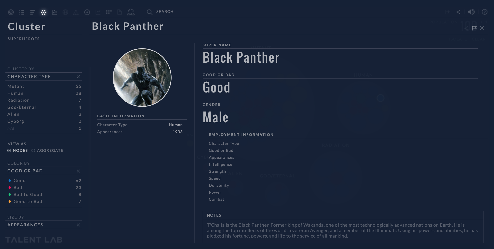
Black Panther’s hero and background information is displayed here (found by double clicking a particular hero on the visualization).
Along with the cluster view you have partition, bar, scatter, talent target, distribution, and word cloud modes. The word cloud is especially interesting if you filter for a specific population, you can further specify the hero’s type of information like gender, good or bad, and character type on top of the description. Let’s start with the partition view. 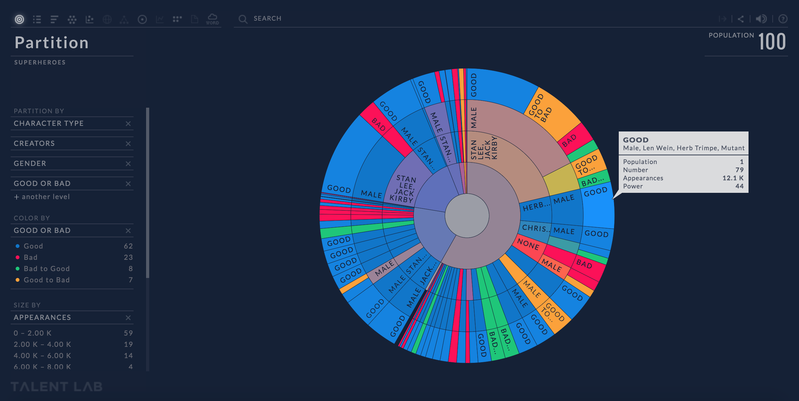
Partition view (settings: partition by = character type and creators and gender and good or bad, color by = good or bad, size by = appearances, and view numbers as count)
This is a very interesting visualization and highly customizable, but very hard to read. Users can double press on a particular region to filter to that particular population. The animations for this are absolutely stunning and transitions are fluid giving user some context as they move to their filtered dataset. However, readability is still a bit difficult and polar coordinates are a bit harder to read as data grows (i.e. how much greater is region x from region y). Along with the cluster view you have partition, bar, scatter, talent target, distribution, and word cloud modes. The word cloud is especially interesting if you filter for a specific population, you can further specify the hero’s type of information like gender, good or bad, and character type on top of the description. Let’s start with the partition view. 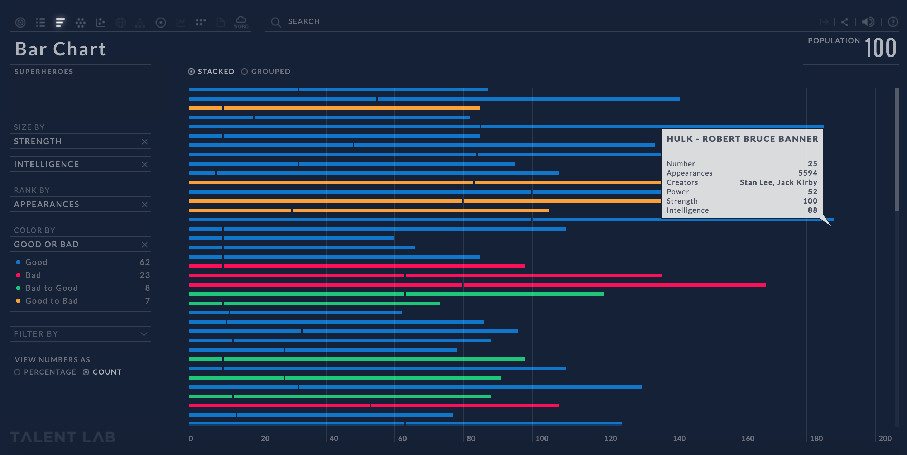
Bar Chart view (settings: size by = strength and intelligence, rank by = appearances, color by = good or bad)
Here we can see that although there are some heroes who are extremely intelligent and powerful the ones that have more appearances tend to be character who score higher in a particular characteristic (not both). Also, the characters with the most appearances tend to be good heroes or those who are in the realm between good/bad (i.e. characters like Colossus who are good but might not use conventional means to fight crime). One of the problems with this visualization is that the entire dataset is not visible with a normal laptop’s resolution. Using a higher resolution screen however distorts the UI (as it seems to have been made for standard screens). 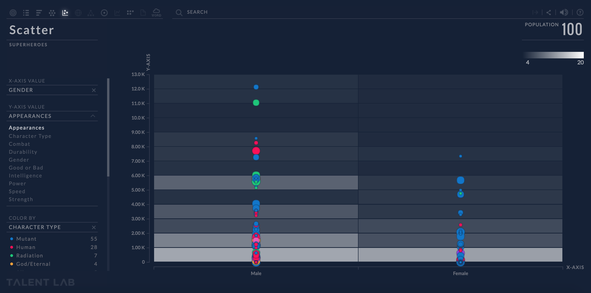
Scatter view (settings: x value = gender, y value = appearances, color by = character type, size by = strength)
By using a scatter plot we can ascertain a few things. First we see that a character that appears more doesn’t necessarily need to be very strong regardless of if they are male or female. However we do see that most female characters appear to be on the good side than any other region on the spectrum. Let’s rearrange the data to see how intelligent our heroes are in terms of gender. 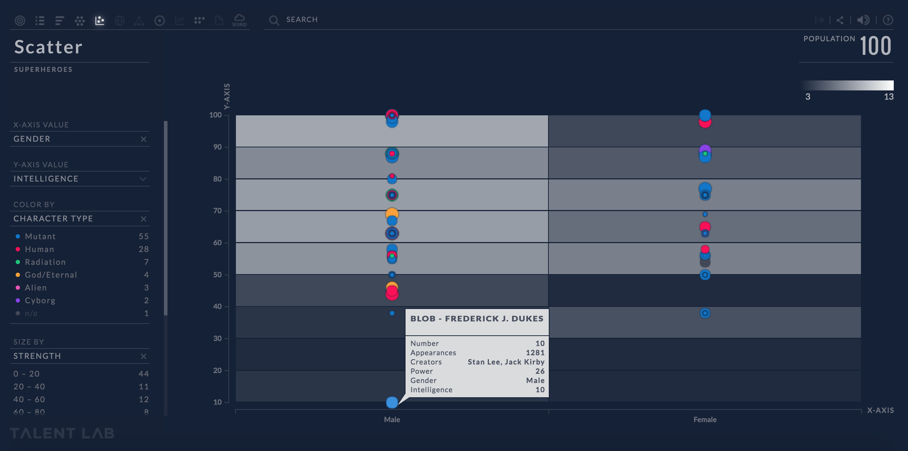
Generally heroes have a score of 40 intelligence, but we see that on the male side there is a huge outlier (Blob aka Frederick J Dukes).
We can do further manipulations to the dataset by making the x axis = good or bad, y axis = character type, coloring by gender, and sizing by appearances. 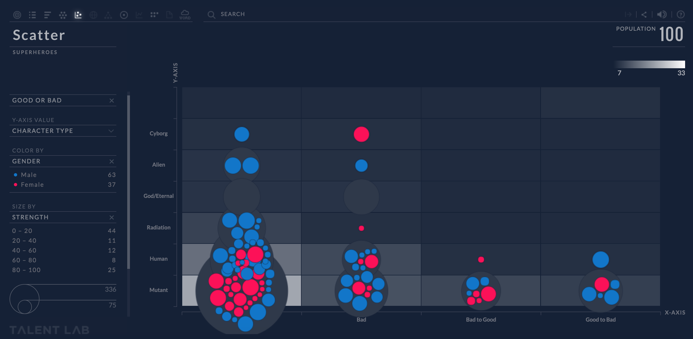
Clearly we can see that good mutants have a lot more appearances than any of the others on the graph. The unevenness of male to female heroes becomes a lot more apparent as well. Wonder why that’s the case? Perhaps a societal issue on the way we view heroes? The comic industries preference towards a marketable character? Does it have anything to do with merchandising (is it easier to sell good mutants than cyborgs or aliens)? Maybe… more research is needed here beyond the visualization!
The next view visualizes data with a talent target view. This particular view is very hard to read for two reasons: polar coordinates are hard to read and having more data variables in the target severely decreases comprehension. However the ability to sector the graph by a specific characteristic and color it by the same characteristic make it very easy to read. Without the hovering feature understanding this particular set would prove to be very difficult.

Talent Target view (settings: target on = character type and intelligence and power, sector by = gender, color by = gender, and size by = appearances)
With Distribution View we can further prove our point that mutants tend to account for most of the heroes in this set and dominate each section. We see here how we can aggregate this data if we don’t want to grab individualized particular heroes. 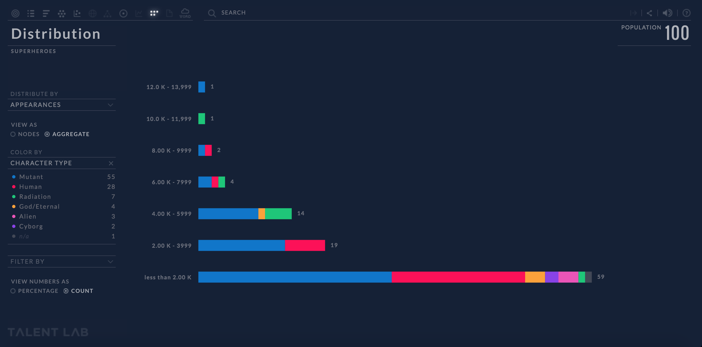
Distribution View (settings: distribute by = appearances, view as = aggregate, color by = character type)
Now let’s see how we describe our heroes. As you can see below “batman” seems to be a very recurring word in descriptions along with “mutant” (which as we saw earlier makes sense seeing as mutants are very popular superheroes). 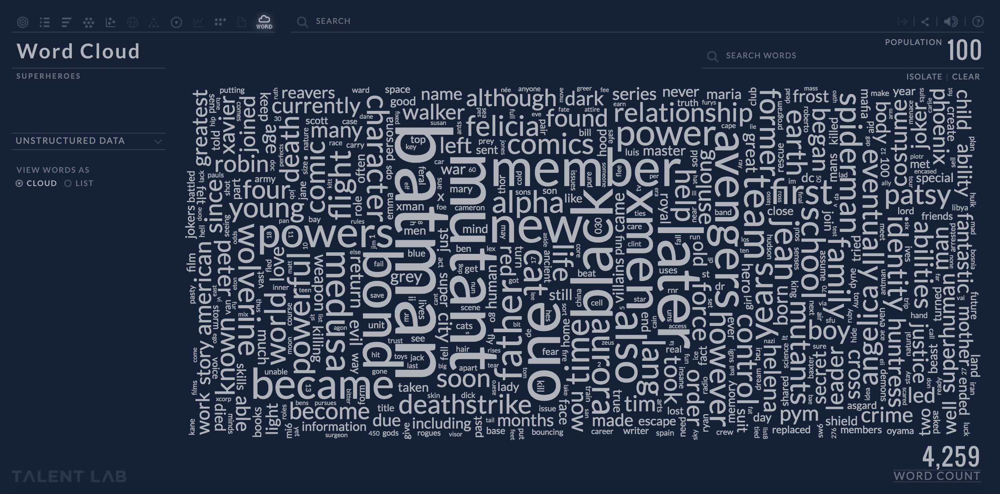
If we press on “batman” and filter the population that had “batman” in their description we get the following. Here we can even see the people that are pretty close to batman like Robin, Joker, and his native city of Gotham. 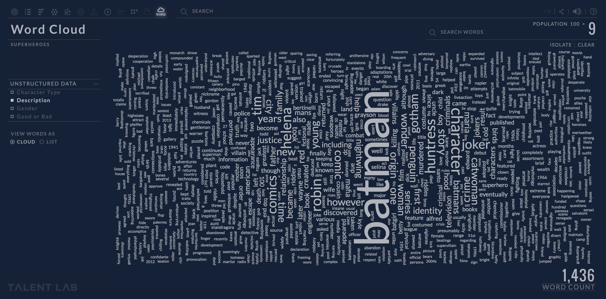
In the end the ability to manipulate the data in so many ways makes this a powerful tool that not only answers the questions we had initially but generate more interesting question. By answering those questions we are able to pinpoint trends and make hypothesis that could change the way we view heroes in general.